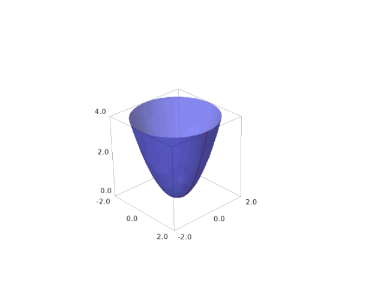
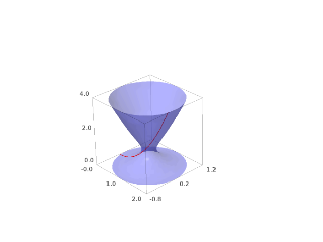
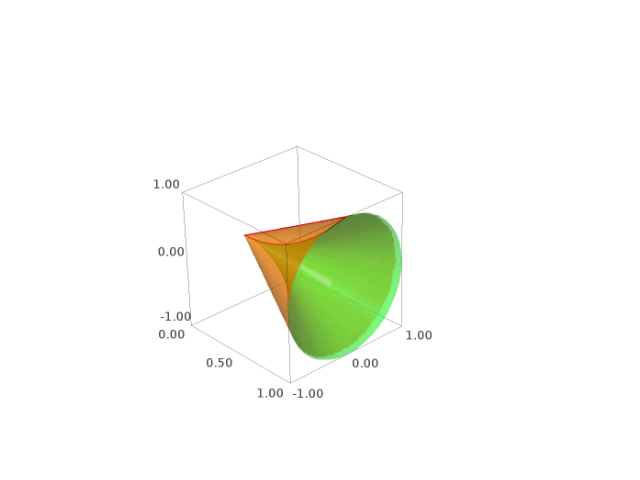
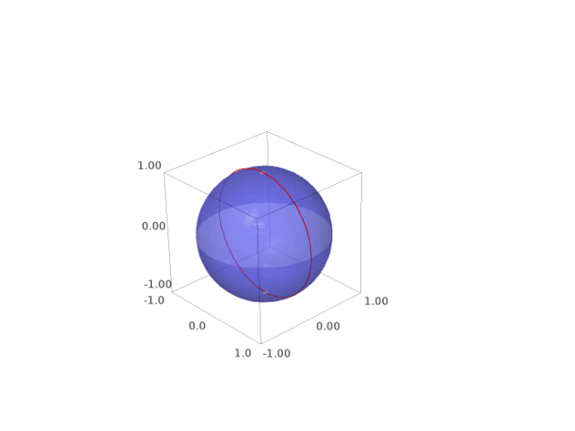
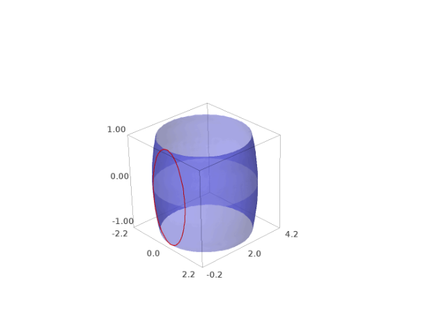
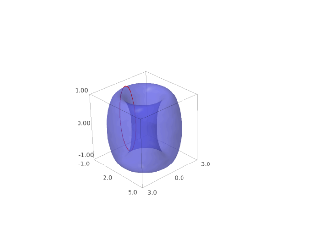
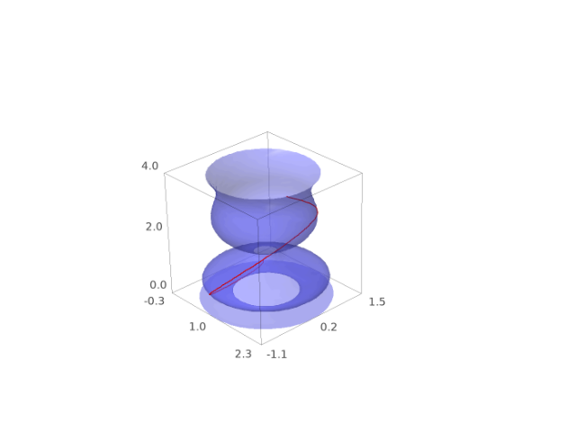
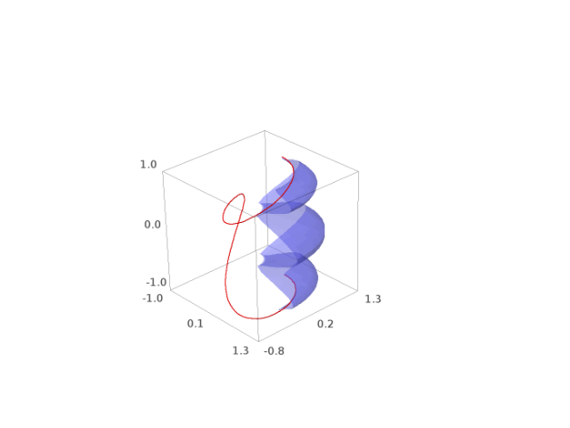
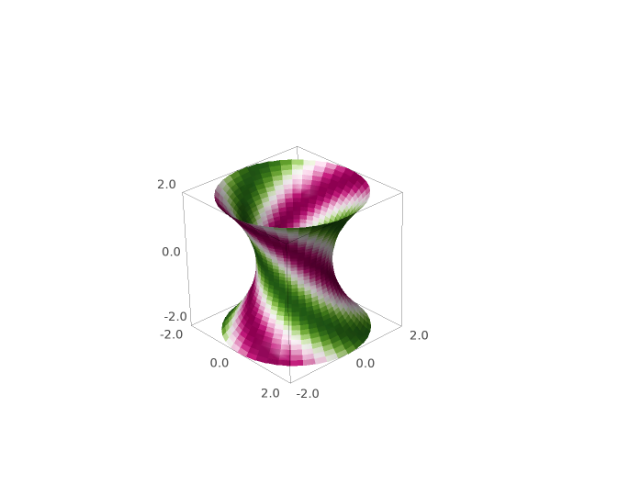

Surfaces of revolution¶
AUTHORS:
- Oscar Gerardo Lazo Arjona (2010): initial version.
-
sage.plot.plot3d.revolution_plot3d.revolution_plot3d(curve, trange, phirange=None, parallel_axis='z', axis=(0, 0), print_vector=False, show_curve=False, **kwds)¶ Return a plot of a revolved curve.
There are three ways to call this function:
revolution_plot3d(f,trange)where \(f\) is a function located in the \(x z\) plane.revolution_plot3d((f_x,f_z),trange)where \((f_x,f_z)\) is a parametric curve on the \(x z\) plane.revolution_plot3d((f_x,f_y,f_z),trange)where \((f_x,f_y,f_z)\) can be any parametric curve.
INPUT:
curve- A curve to be revolved, specified as a function, a 2-tuple or a 3-tuple.trange- A 3-tuple \((t,t_{\min},t_{\max})\) where t is the independent variable of the curve.phirange- A 2-tuple of the form \((\phi_{\min},\phi_{\max})\), (default \((0,\pi)\)) that specifies the angle in which the curve is to be revolved.parallel_axis- A string (Either ‘x’, ‘y’, or ‘z’) that specifies the coordinate axis parallel to the revolution axis.axis- A 2-tuple that specifies the position of the revolution axis. If parallel is:- ‘z’ - then axis is the point in which the revolution axis intersects the \(x y\) plane.
- ‘x’ - then axis is the point in which the revolution axis intersects the \(y z\) plane.
- ‘y’ - then axis is the point in which the revolution axis intersects the \(x z\) plane.
print_vector- If True, the parametrization of the surface of revolution will be printed.show_curve- If True, the curve will be displayed.
EXAMPLES:
Let’s revolve a simple function around different axes:
sage: u = var('u') sage: f = u^2 sage: revolution_plot3d(f, (u,0,2), show_curve=True, opacity=0.7).show(aspect_ratio=(1,1,1))
If we move slightly the axis, we get a goblet-like surface:
sage: revolution_plot3d(f, (u,0,2), axis=(1,0.2), show_curve=True, opacity=0.5).show(aspect_ratio=(1,1,1))
A common problem in calculus books, find the volume within the following revolution solid:
sage: line = u sage: parabola = u^2 sage: sur1 = revolution_plot3d(line, (u,0,1), opacity=0.5, rgbcolor=(1,0.5,0), show_curve=True, parallel_axis='x') sage: sur2 = revolution_plot3d(parabola, (u,0,1), opacity=0.5, rgbcolor=(0,1,0), show_curve=True, parallel_axis='x') sage: (sur1+sur2).show()
Now let’s revolve a parametrically defined circle. We can play with the topology of the surface by changing the axis, an axis in \((0,0)\) (as the previous one) will produce a sphere-like surface:
sage: u = var('u') sage: circle = (cos(u), sin(u)) sage: revolution_plot3d(circle, (u,0,2*pi), axis=(0,0), show_curve=True, opacity=0.5).show(aspect_ratio=(1,1,1))
An axis on \((0,y)\) will produce a cylinder-like surface:
sage: revolution_plot3d(circle, (u,0,2*pi), axis=(0,2), show_curve=True, opacity=0.5).show(aspect_ratio=(1,1,1))
And any other axis will produce a torus-like surface:
sage: revolution_plot3d(circle, (u,0,2*pi), axis=(2,0), show_curve=True, opacity=0.5).show(aspect_ratio=(1,1,1))
Now, we can get another goblet-like surface by revolving a curve in 3d:
sage: u = var('u') sage: curve = (u, cos(4*u), u^2) sage: P = revolution_plot3d(curve, (u,0,2), show_curve=True, parallel_axis='z',axis=(1,.2), opacity=0.5) sage: P.show(aspect_ratio=(1,1,1))
A curvy curve with only a quarter turn:
sage: u = var('u') sage: curve = (sin(3*u), .8*cos(4*u), cos(u)) sage: revolution_plot3d(curve, (u,0,pi), (0,pi/2), show_curve=True, parallel_axis='z', opacity=0.5).show(aspect_ratio=(1,1,1),frame=False)
One can also color the surface using a coloring function of two parameters and a colormap as follows:
sage: u, phi = var('u,phi') sage: def cf(u,phi): return sin(phi+u) ^ 2 sage: curve = (1+u^2/4, 0, u) sage: revolution_plot3d(curve, (u,-2,2), (0,2*pi), parallel_axis='z', color=(cf, colormaps.PiYG)).show(aspect_ratio=(1,1,1))
The first parameter of the coloring function will be identified with the parameter of the curve, and the second with the angle parameter.
Warning
This kind of coloring using a colormap can be visualized using Jmol, Tachyon (option
viewer='tachyon') and Canvas3D (optionviewer='canvas3d'in the notebook).